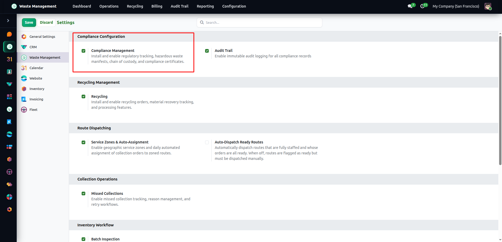
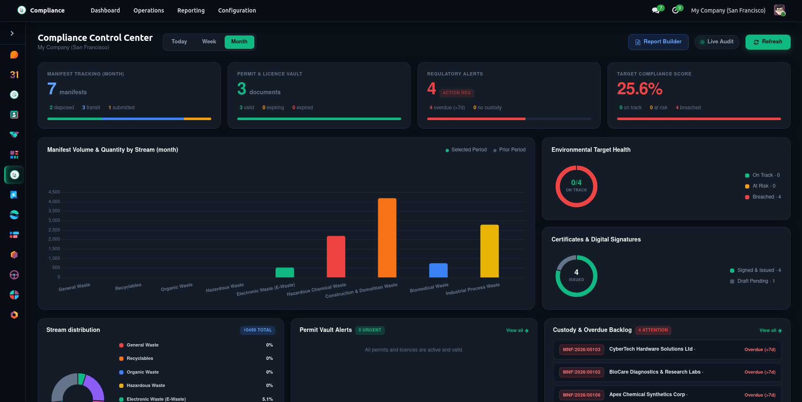
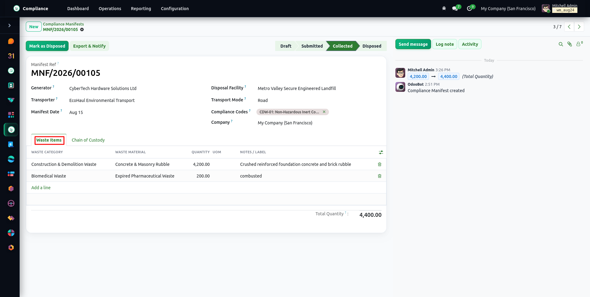
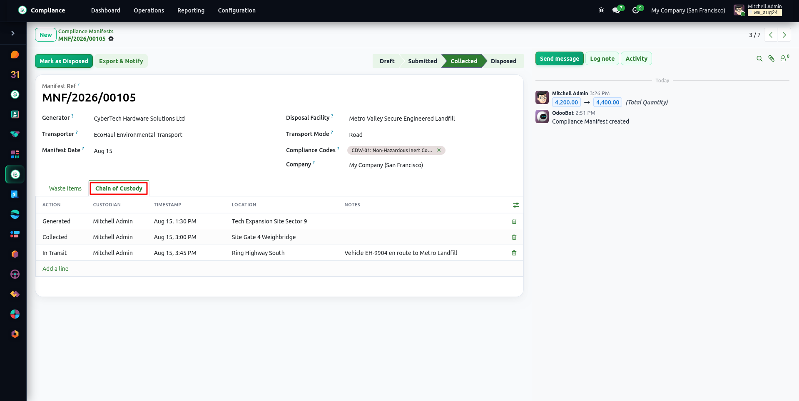
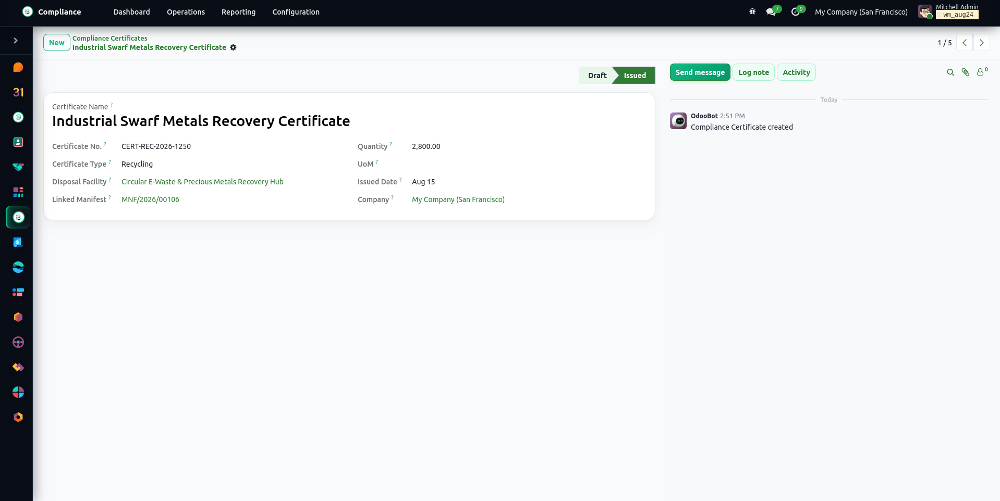
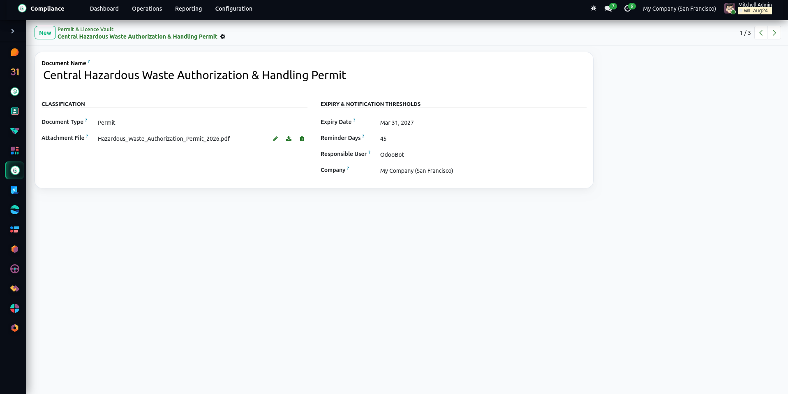
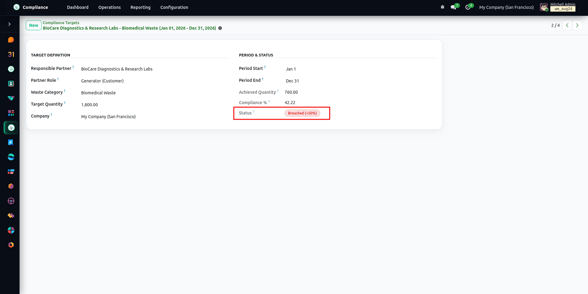
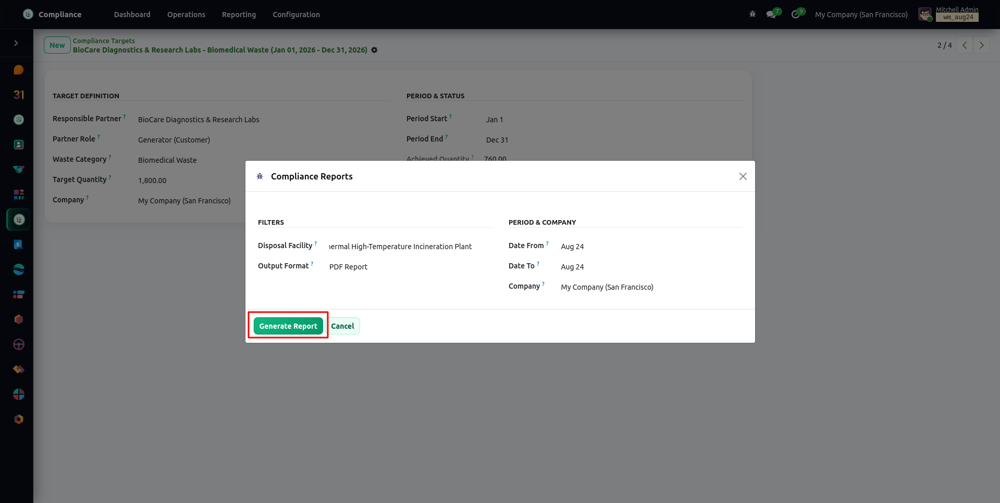
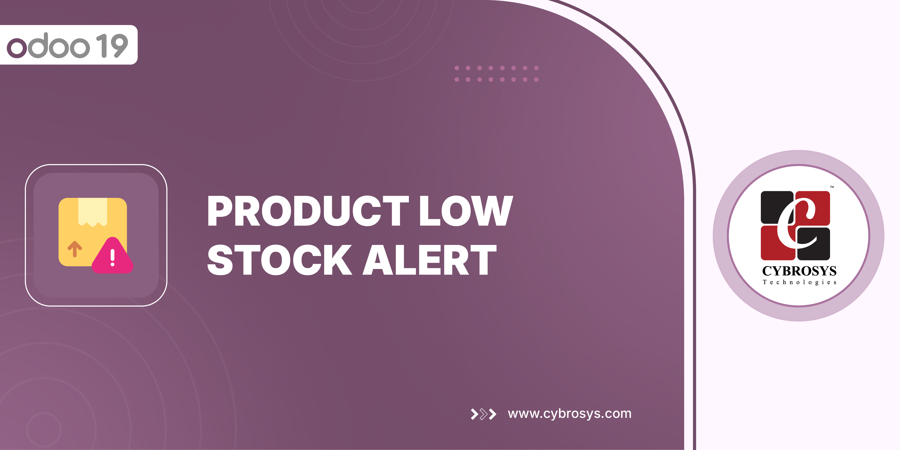

<!-- =================================================================
     Waste Management Compliance — Odoo 19 Community description page
     ================================================================= -->
<section class="oe_container" style="background-color:#F7F8F6; color:#1A1B1D; font-family:-apple-system,BlinkMacSystemFont,'Segoe UI',Helvetica,Arial,sans-serif; font-size:16px; line-height:1.6; padding:0; margin:0;">

  <div style="width:100%; max-width:1240px; margin:0 auto; padding:28px 16px 80px;">

    <!-- ============ COMPATIBILITY BAR ============ -->
    <table cellpadding="0" cellspacing="0" border="0" style="width:100%; table-layout:fixed; border-collapse:collapse; background-color:#FFFFFF; border:1px solid #E4E6E2; border-radius:14px; margin-bottom:24px;">
      <tr>
        <td style="vertical-align:middle; padding:16px 24px; width:30%;">
          <span style="font-weight:800; font-size:12px; text-transform:uppercase; letter-spacing:0.1em; color:#8B9099; margin-right:8px;">Supports</span>
          <span style="padding:6px 14px; border-radius:20px; font-weight:700; font-size:13px; background-color:#1A1B1D; color:#FFFFFF; border:1px solid #1A1B1D; display:inline-block;">Community</span>
        </td>
        <td style="vertical-align:middle; padding:16px 24px; width:70%; text-align:right;">
          <span style="font-weight:800; font-size:12px; text-transform:uppercase; letter-spacing:0.1em; color:#8B9099; margin-right:8px;">Availability</span>
          <span style="padding:6px 14px; border-radius:20px; font-weight:700; font-size:13px; background-color:#FFFFFF; border:1px solid #E4E6E2; color:#1A1B1D; display:inline-block; margin:3px 0 3px 4px;">
            <i class="fa fa-check-circle" style="color:#2F6B4F; margin-right:6px;"></i>On Premise
          </span>
          <span style="padding:6px 14px; border-radius:20px; font-weight:700; font-size:13px; background-color:#FFFFFF; border:1px solid #E4E6E2; color:#8B9099; display:inline-block; margin:3px 0 3px 4px;">
            <i class="fa fa-times-circle" style="color:#B4B8B0; margin-right:6px;"></i>Odoo.sh
          </span>
        </td>
      </tr>
    </table>

    <!-- ============ HERO BANNER ============ -->
    <div style="background-color:#F3F8EC; border:1px solid #E4E6E2; border-radius:20px; padding:48px 40px; margin-bottom:32px;">
      <p style="font-size:13px; font-weight:800; letter-spacing:0.16em; text-transform:uppercase; color:#82901F; margin:0 0 12px;">
        <span style="display:inline-block; width:22px; height:2px; background-color:#B5C235; vertical-align:middle; margin-right:10px;"></span>
        Odoo 19 &middot; Waste Management Compliance
      </p>
      <h1 style="font-size:42px; font-weight:800; color:#1A1B1D; margin:0 0 18px; line-height:1.15; letter-spacing:-0.02em; max-width:900px;">
        Universal Waste Manifests &amp; Custody Compliance
      </h1>
      <p style="font-size:17px; color:#5C6066; margin:0 0 28px; line-height:1.6; max-width:820px;">
        State-locked electronic manifests for hazardous, non-hazardous, and medical waste with verified chain-of-custody tracking, disposal certificates, and permit expiry reminders in Odoo 19.
      </p>
      <div>
        <a href="mailto:odoo@cybrosys.com" style="display:inline-block; font-size:15px; font-weight:700; text-decoration:none; padding:13px 24px; border-radius:14px; background-color:#B5C235; color:#1A1B1D; border:1px solid #A2AF2C; margin:4px 8px 4px 0;">
          <i class="fa fa-envelope" style="margin-right:9px;"></i>Email Us
        </a>
        <a href="https://teams.microsoft.com/l/chat/0/0?users=odoo@cybrosys.com" style="display:inline-block; font-size:15px; font-weight:700; text-decoration:none; padding:13px 24px; border-radius:14px; background-color:#FFFFFF; color:#1A1B1D; border:1px solid #E4E6E2; margin:4px 8px 4px 0;">
          <i class="fa fa-users" style="color:#5059C9; margin-right:9px;"></i>Teams
        </a>
        <a href="https://wa.me/919074270811" target="_blank" style="display:inline-block; font-size:15px; font-weight:700; text-decoration:none; padding:13px 24px; border-radius:14px; background-color:#FFFFFF; color:#1A1B1D; border:1px solid #E4E6E2; margin:4px 8px 4px 0;">
          <i class="fa fa-whatsapp" style="color:#25D366; margin-right:9px;"></i>+91 9074270811
        </a>
      </div>
    </div>

    <!-- ============ WORKFLOW PIPELINE ============ -->
    <div style="background-color:#FFFFFF; border:1px solid #E4E6E2; border-radius:20px; padding:44px 36px; margin-bottom:32px;">
      <div style="text-align:center; margin-bottom:36px;">
        <p style="font-size:12px; font-weight:800; letter-spacing:0.18em; text-transform:uppercase; color:#82901F; margin:0 0 12px;">Regulatory Lifecycle</p>
        <h2 style="font-size:32px; font-weight:800; color:#1A1B1D; margin:0 0 12px; line-height:1.2;">Chain-of-Custody from Generator to Disposal</h2>
        <p style="font-size:17px; color:#5C6066; max-width:700px; margin:0 auto; line-height:1.6;">State-locked manifest workflow (Draft, Submitted, Collected, Disposed) with a custody trail across generator, transporter, and disposal facility.</p>
      </div>

      <table cellpadding="0" cellspacing="0" border="0" style="width:100%; table-layout:fixed; border-collapse:separate; border-spacing:12px;">
        <tr>
          <td style="width:33.33%; vertical-align:top; border-top:2px solid #E4E6E2; padding-top:14px; word-wrap:break-word;">
            <div style="font-size:13px; font-weight:800; color:#8B9099; margin-bottom:6px;">01</div>
            <h3 style="font-size:16px; font-weight:700; color:#1A1B1D; margin:0 0 6px;">Manifest Initiation</h3>
            <p style="font-size:14px; color:#5C6066; margin:0; line-height:1.5;">Create a manifest manually, or automatically from a completed collection order, with compliance codes suggested from the matching rule set.</p>
          </td>
          <td style="width:33.33%; vertical-align:top; border-top:2px solid #E4E6E2; padding-top:14px; word-wrap:break-word;">
            <div style="font-size:13px; font-weight:800; color:#8B9099; margin-bottom:6px;">02</div>
            <h3 style="font-size:16px; font-weight:700; color:#1A1B1D; margin:0 0 6px;">Submit &amp; Sign</h3>
            <p style="font-size:14px; color:#5C6066; margin:0; line-height:1.5;">Submitting locks the manifest content, requires the mandatory compliance codes, and signs the manifest PDF with a SHA-256 hash.</p>
          </td>
          <td style="width:33.33%; vertical-align:top; border-top:2px solid #E4E6E2; padding-top:14px; word-wrap:break-word;">
            <div style="font-size:13px; font-weight:800; color:#8B9099; margin-bottom:6px;">03</div>
            <h3 style="font-size:16px; font-weight:700; color:#1A1B1D; margin:0 0 6px;">Transporter Log</h3>
            <p style="font-size:14px; color:#5C6066; margin:0; line-height:1.5;">Marking the manifest as Collected records the transporter custody handoff.</p>
          </td>
        </tr>
        <tr>
          <td style="width:33.33%; vertical-align:top; border-top:2px solid #E4E6E2; padding-top:14px; word-wrap:break-word;">
            <div style="font-size:13px; font-weight:800; color:#8B9099; margin-bottom:6px;">04</div>
            <h3 style="font-size:16px; font-weight:700; color:#1A1B1D; margin:0 0 6px;">Facility Intake</h3>
            <p style="font-size:14px; color:#5C6066; margin:0; line-height:1.5;">Facility gate-entry intake (WM Collection) logs received or disposed custody steps; a fully accepted load completes the manifest.</p>
          </td>
          <td style="width:33.33%; vertical-align:top; border-top:2px solid #E4E6E2; padding-top:14px; word-wrap:break-word;">
            <div style="font-size:13px; font-weight:800; color:#8B9099; margin-bottom:6px;">05</div>
            <h3 style="font-size:16px; font-weight:700; color:#1A1B1D; margin:0 0 6px;">Destruction Cert</h3>
            <p style="font-size:14px; color:#5C6066; margin:0; line-height:1.5;">A Certificate of Destruction is issued automatically on disposal, as a signed PDF with a SHA-256 hash.</p>
          </td>
          <td style="width:33.33%; vertical-align:top; border-top:2px solid #E4E6E2; padding-top:14px; word-wrap:break-word;">
            <div style="font-size:13px; font-weight:800; color:#8B9099; margin-bottom:6px;">06</div>
            <h3 style="font-size:16px; font-weight:700; color:#1A1B1D; margin:0 0 6px;">Audit Export</h3>
            <p style="font-size:14px; color:#5C6066; margin:0; line-height:1.5;">On-demand manifest and certificate reports (PDF or Excel) ready for regulatory audit.</p>
          </td>
        </tr>
      </table>
    </div>

    <!-- ============ CORE CAPABILITIES ============ -->
    <div style="background-color:#FFFFFF; border:1px solid #E4E6E2; border-radius:20px; padding:44px 36px; margin-bottom:32px;">
      <div style="text-align:center; margin-bottom:36px;">
        <p style="font-size:12px; font-weight:800; letter-spacing:0.18em; text-transform:uppercase; color:#82901F; margin:0 0 12px;">Core Capabilities</p>
        <h2 style="font-size:32px; font-weight:800; color:#1A1B1D; margin:0 0 12px; line-height:1.2;">Engineered for Waste Regulatory Compliance</h2>
        <p style="font-size:17px; color:#5C6066; max-width:700px; margin:0 auto; line-height:1.6;">Robust compliance tools ensuring unbroken chain-of-custody and regulatory defense.</p>
      </div>

      <table cellpadding="0" cellspacing="0" border="0" style="width:100%; table-layout:fixed; border-collapse:separate; border-spacing:12px;">
        <tr>
          <td style="width:33.33%; vertical-align:top; background-color:#F7F8F6; border:1px solid #E4E6E2; border-radius:14px; padding:22px; word-wrap:break-word;">
            <span style="display:inline-block; width:40px; height:40px; line-height:40px; text-align:center; border-radius:10px; background-color:#FFFFFF; color:#82901F; border:1px solid #E4E6E2; margin-bottom:12px;"><i class="fa fa-shield" style="font-size:18px;"></i></span>
            <h3 style="font-size:16px; font-weight:700; color:#1A1B1D; margin:0 0 6px;">Universal Manifests</h3>
            <p style="font-size:14px; color:#5C6066; margin:0; line-height:1.5;">One state-locked manifest form with waste lines per waste category and compliance codes for hazardous, non-hazardous, and medical waste.</p>
          </td>
          <td style="width:33.33%; vertical-align:top; background-color:#F7F8F6; border:1px solid #E4E6E2; border-radius:14px; padding:22px; word-wrap:break-word;">
            <span style="display:inline-block; width:40px; height:40px; line-height:40px; text-align:center; border-radius:10px; background-color:#FFFFFF; color:#82901F; border:1px solid #E4E6E2; margin-bottom:12px;"><i class="fa fa-link" style="font-size:18px;"></i></span>
            <h3 style="font-size:16px; font-weight:700; color:#1A1B1D; margin:0 0 6px;">Verifiable Chain-of-Custody</h3>
            <p style="font-size:14px; color:#5C6066; margin:0; line-height:1.5;">Custody logs recording the action, responsible custodian, timestamp, and location notes; once a manifest is submitted they cannot be edited or deleted.</p>
          </td>
          <td style="width:33.33%; vertical-align:top; background-color:#F7F8F6; border:1px solid #E4E6E2; border-radius:14px; padding:22px; word-wrap:break-word;">
            <span style="display:inline-block; width:40px; height:40px; line-height:40px; text-align:center; border-radius:10px; background-color:#FFFFFF; color:#82901F; border:1px solid #E4E6E2; margin-bottom:12px;"><i class="fa fa-file-text-o" style="font-size:18px;"></i></span>
            <h3 style="font-size:16px; font-weight:700; color:#1A1B1D; margin:0 0 6px;">Disposal Certificates</h3>
            <p style="font-size:14px; color:#5C6066; margin:0; line-height:1.5;">Generate Certificates of Disposal, Recycling, Treatment, or Destruction with unique certificate numbers, issued as signed PDFs.</p>
          </td>
        </tr>
        <tr>
          <td style="width:33.33%; vertical-align:top; background-color:#F7F8F6; border:1px solid #E4E6E2; border-radius:14px; padding:22px; word-wrap:break-word;">
            <span style="display:inline-block; width:40px; height:40px; line-height:40px; text-align:center; border-radius:10px; background-color:#FFFFFF; color:#82901F; border:1px solid #E4E6E2; margin-bottom:12px;"><i class="fa fa-clock-o" style="font-size:18px;"></i></span>
            <h3 style="font-size:16px; font-weight:700; color:#1A1B1D; margin:0 0 6px;">Permit Expiry Tracking</h3>
            <p style="font-size:14px; color:#5C6066; margin:0; line-height:1.5;">Document vault tracking expiry dates, with automated daily to-do reminders for permits, licences, certificates, and authorizations.</p>
          </td>
          <td style="width:33.33%; vertical-align:top; background-color:#F7F8F6; border:1px solid #E4E6E2; border-radius:14px; padding:22px; word-wrap:break-word;">
            <span style="display:inline-block; width:40px; height:40px; line-height:40px; text-align:center; border-radius:10px; background-color:#FFFFFF; color:#82901F; border:1px solid #E4E6E2; margin-bottom:12px;"><i class="fa fa-bullseye" style="font-size:18px;"></i></span>
            <h3 style="font-size:16px; font-weight:700; color:#1A1B1D; margin:0 0 6px;">Compliance Targets &amp; Quotas</h3>
            <p style="font-size:14px; color:#5C6066; margin:0; line-height:1.5;">Set quantity targets per partner (generator or transporter), waste category, and date period, with achieved quantity and compliance status (On Track, At Risk, Breached) computed from manifests.</p>
          </td>
          <td style="width:33.33%; vertical-align:top; background-color:#F7F8F6; border:1px solid #E4E6E2; border-radius:14px; padding:22px; word-wrap:break-word;">
            <span style="display:inline-block; width:40px; height:40px; line-height:40px; text-align:center; border-radius:10px; background-color:#FFFFFF; color:#82901F; border:1px solid #E4E6E2; margin-bottom:12px;"><i class="fa fa-line-chart" style="font-size:18px;"></i></span>
            <h3 style="font-size:16px; font-weight:700; color:#1A1B1D; margin:0 0 6px;">Regulatory Report Builder</h3>
            <p style="font-size:14px; color:#5C6066; margin:0; line-height:1.5;">Report wizard compiling manifest summaries and issued-certificate registers with date and facility filters, exportable to Excel and PDF.</p>
          </td>
        </tr>
        <tr>
          <td style="width:33.33%; vertical-align:top; background-color:#F7F8F6; border:1px solid #E4E6E2; border-radius:14px; padding:22px; word-wrap:break-word;">
            <span style="display:inline-block; width:40px; height:40px; line-height:40px; text-align:center; border-radius:10px; background-color:#FFFFFF; color:#82901F; border:1px solid #E4E6E2; margin-bottom:12px;"><i class="fa fa-sliders" style="font-size:18px;"></i></span>
            <h3 style="font-size:16px; font-weight:700; color:#1A1B1D; margin:0 0 6px;">Compliance Rule Sets</h3>
            <p style="font-size:14px; color:#5C6066; margin:0; line-height:1.5;">Configurable rule sets by country, state, waste category, and manifest type: required compliance codes are enforced when a manifest is submitted, and manifest requirement and retention years are recorded.</p>
          </td>
          <td style="width:33.33%; vertical-align:top; background-color:#F7F8F6; border:1px solid #E4E6E2; border-radius:14px; padding:22px; word-wrap:break-word;">
            <span style="display:inline-block; width:40px; height:40px; line-height:40px; text-align:center; border-radius:10px; background-color:#FFFFFF; color:#82901F; border:1px solid #E4E6E2; margin-bottom:12px;"><i class="fa fa-exclamation-triangle" style="font-size:18px;"></i></span>
            <h3 style="font-size:16px; font-weight:700; color:#1A1B1D; margin:0 0 6px;">Safety Incidents</h3>
            <p style="font-size:14px; color:#5C6066; margin:0; line-height:1.5;">Incident management recording spills, injuries, vehicle incidents, and near misses with severity ratings, immediate action taken, OSHA flags, regulatory deadlines, and a photo.</p>
          </td>
          <td style="width:33.33%; vertical-align:top; background-color:#F7F8F6; border:1px solid #E4E6E2; border-radius:14px; padding:22px; word-wrap:break-word;">
            <span style="display:inline-block; width:40px; height:40px; line-height:40px; text-align:center; border-radius:10px; background-color:#FFFFFF; color:#82901F; border:1px solid #E4E6E2; margin-bottom:12px;"><i class="fa fa-building-o" style="font-size:18px;"></i></span>
            <h3 style="font-size:16px; font-weight:700; color:#1A1B1D; margin:0 0 6px;">Disposal Facility Registry</h3>
            <p style="font-size:14px; color:#5C6066; margin:0; line-height:1.5;">Registry of disposal &amp; treatment facilities, tracking facility type, licence or permit number, licensing authority, address, and contact email.</p>
          </td>
        </tr>
      </table>
    </div>

    <!-- ============ TABS ============ -->
    <style>
      section.oe_container .nav-tabs { border:none !important; }
      section.oe_container .nav-tabs .nav-link.active { background:#82901F !important; color:#fff !important; border-radius:24px !important; box-shadow:0 4px 12px rgba(130,144,31,0.28) !important; }
      section.oe_container input[type="radio"].wm-tab-input { display:none !important; }
      section.oe_container .tab-pane { display:none; }
      section.oe_container .tab-pane.active { display:block !important; }
      #wm-ss-radio:checked~.tab-content #wm-screenshots,#wm-ft-radio:checked~.tab-content #wm-features,#wm-fq-radio:checked~.tab-content #wm-faqs,#wm-rl-radio:checked~.tab-content #wm-releases { display:block !important; }
      #wm-ft-radio:checked~.tab-content #wm-screenshots.active,#wm-fq-radio:checked~.tab-content #wm-screenshots.active,#wm-rl-radio:checked~.tab-content #wm-screenshots.active { display:none !important; }
      #wm-ss-radio:checked~div ul.nav-tabs #wm-screenshots-tab,#wm-ft-radio:checked~div ul.nav-tabs #wm-features-tab,#wm-fq-radio:checked~div ul.nav-tabs #wm-faqs-tab,#wm-rl-radio:checked~div ul.nav-tabs #wm-releases-tab { background:#82901F !important; color:#fff !important; border-radius:24px !important; box-shadow:0 4px 12px rgba(130,144,31,0.28) !important; }
      #wm-ft-radio:checked~div ul.nav-tabs #wm-screenshots-tab.active,#wm-fq-radio:checked~div ul.nav-tabs #wm-screenshots-tab.active,#wm-rl-radio:checked~div ul.nav-tabs #wm-screenshots-tab.active { background:transparent !important; color:#5C6066 !important; box-shadow:none !important; border-radius:24px !important; }
    </style>

    <div style="background-color:#FFFFFF; border:1px solid #E4E6E2; border-radius:20px; padding:40px 36px; margin-bottom:32px;">
      <input type="radio" id="wm-ss-radio" name="wm-tabs" class="wm-tab-input" checked style="display:none" />
      <input type="radio" id="wm-ft-radio" name="wm-tabs" class="wm-tab-input" style="display:none" />
      <input type="radio" id="wm-fq-radio" name="wm-tabs" class="wm-tab-input" style="display:none" />
      <input type="radio" id="wm-rl-radio" name="wm-tabs" class="wm-tab-input" style="display:none" />

      <div style="text-align:center; margin-bottom:2rem;"><ul class="nav nav-tabs" id="wmCompTab" role="tablist" style="border:none; background:#F3F4EE; border-radius:30px; padding:6px; display:inline-flex; list-style:none; margin:0 auto; box-shadow:inset 0 2px 4px rgba(26,27,29,0.05);">
        <li class="nav-item" role="presentation" style="margin:0;"><label class="nav-link active" id="wm-screenshots-tab" data-bs-toggle="tab" data-toggle="tab" href="#wm-screenshots" for="wm-ss-radio" role="tab" style="text-decoration:none; display:inline-block; border-radius:24px; margin:0 3px; cursor:pointer; padding:11px 26px; font-weight:700; font-size:14px; color:#5C6066;">Screenshots</label></li>
        <li class="nav-item" role="presentation" style="margin:0;"><label class="nav-link" id="wm-features-tab" data-bs-toggle="tab" data-toggle="tab" href="#wm-features" for="wm-ft-radio" role="tab" style="text-decoration:none; display:inline-block; border-radius:24px; margin:0 3px; cursor:pointer; padding:11px 26px; font-weight:700; font-size:14px; color:#5C6066;">Features</label></li>
        <li class="nav-item" role="presentation" style="margin:0;"><label class="nav-link" id="wm-faqs-tab" data-bs-toggle="tab" data-toggle="tab" href="#wm-faqs" for="wm-fq-radio" role="tab" style="text-decoration:none; display:inline-block; border-radius:24px; margin:0 3px; cursor:pointer; padding:11px 26px; font-weight:700; font-size:14px; color:#5C6066;">FAQs</label></li>
        <li class="nav-item" role="presentation" style="margin:0;"><label class="nav-link" id="wm-releases-tab" data-bs-toggle="tab" data-toggle="tab" href="#wm-releases" for="wm-rl-radio" role="tab" style="text-decoration:none; display:inline-block; border-radius:24px; margin:0 3px; cursor:pointer; padding:11px 26px; font-weight:700; font-size:14px; color:#5C6066;">Releases</label></li>
      </ul></div>

      <div class="tab-content" id="wmCompTabContent">

        <!-- SCREENSHOTS -->
        <div class="tab-pane fade show active" id="wm-screenshots" role="tabpanel" aria-labelledby="wm-screenshots-tab"><div style="padding-top:1rem;">

          <div style="border:1px solid #E4E6E2; border-radius:20px; overflow:hidden; background-color:#FFFFFF; margin-bottom:40px;">
            <table cellpadding="0" cellspacing="0" border="0" style="width:100%; table-layout:fixed; border-collapse:collapse; background-color:#F7F8F6; border-bottom:1px solid #E4E6E2;"><tr>
              <td style="padding:14px 24px; vertical-align:middle; width:50%;"><span style="display:inline-block; width:10px; height:10px; border-radius:50%; background-color:#D0D3CD; margin-right:5px;"></span><span style="display:inline-block; width:10px; height:10px; border-radius:50%; background-color:#D0D3CD; margin-right:5px;"></span><span style="display:inline-block; width:10px; height:10px; border-radius:50%; background-color:#D0D3CD;"></span></td>
              <td style="padding:14px 24px; vertical-align:middle; width:50%; text-align:right; font-size:14px; font-weight:600; color:#5C6066;"><i class="fa fa-cog" style="color:#82901F; margin-right:8px;"></i>Configuration</td>
            </tr></table>
            
            <div style="padding:24px 30px;"><h4 style="font-size:20px; font-weight:700; color:#1A1B1D; margin:0 0 8px;"><span style="font-size:14px; font-weight:800; color:#82901F; margin-right:10px;">01</span>Compliance Management Configuration</h4><p style="color:#5C6066; margin:0; line-height:1.6; font-size:15px;">Enable Compliance Management and the Audit Trail directly from the central Waste Management configuration settings.</p></div>
          </div>

          <div style="border:1px solid #E4E6E2; border-radius:20px; overflow:hidden; background-color:#FFFFFF; margin-bottom:40px;">
            <table cellpadding="0" cellspacing="0" border="0" style="width:100%; table-layout:fixed; border-collapse:collapse; background-color:#F7F8F6; border-bottom:1px solid #E4E6E2;"><tr>
              <td style="padding:14px 24px; vertical-align:middle; width:50%;"><span style="display:inline-block; width:10px; height:10px; border-radius:50%; background-color:#D0D3CD; margin-right:5px;"></span><span style="display:inline-block; width:10px; height:10px; border-radius:50%; background-color:#D0D3CD; margin-right:5px;"></span><span style="display:inline-block; width:10px; height:10px; border-radius:50%; background-color:#D0D3CD;"></span></td>
              <td style="padding:14px 24px; vertical-align:middle; width:50%; text-align:right; font-size:14px; font-weight:600; color:#5C6066;"><i class="fa fa-bar-chart" style="color:#82901F; margin-right:8px;"></i>Compliance Dashboard</td>
            </tr></table>
            
            <div style="padding:24px 30px;"><h4 style="font-size:20px; font-weight:700; color:#1A1B1D; margin:0 0 8px;"><span style="font-size:14px; font-weight:800; color:#82901F; margin-right:10px;">02</span>Executive Compliance &amp; Audit Dashboard</h4><p style="color:#5C6066; margin:0; line-height:1.6; font-size:15px;">Oversight of waste manifests, missing custody steps, upcoming permit renewals, certificates, and compliance target progress.</p></div>
          </div>

          <div style="border:1px solid #E4E6E2; border-radius:20px; overflow:hidden; background-color:#FFFFFF; margin-bottom:40px;">
            <table cellpadding="0" cellspacing="0" border="0" style="width:100%; table-layout:fixed; border-collapse:collapse; background-color:#F7F8F6; border-bottom:1px solid #E4E6E2;"><tr>
              <td style="padding:14px 24px; vertical-align:middle; width:50%;"><span style="display:inline-block; width:10px; height:10px; border-radius:50%; background-color:#D0D3CD; margin-right:5px;"></span><span style="display:inline-block; width:10px; height:10px; border-radius:50%; background-color:#D0D3CD; margin-right:5px;"></span><span style="display:inline-block; width:10px; height:10px; border-radius:50%; background-color:#D0D3CD;"></span></td>
              <td style="padding:14px 24px; vertical-align:middle; width:50%; text-align:right; font-size:14px; font-weight:600; color:#5C6066;"><i class="fa fa-shield" style="color:#82901F; margin-right:8px;"></i>Manifest Management</td>
            </tr></table>
            
            <div style="padding:24px 30px;"><h4 style="font-size:20px; font-weight:700; color:#1A1B1D; margin:0 0 8px;"><span style="font-size:14px; font-weight:800; color:#82901F; margin-right:10px;">03</span>Universal Multi-Stream Electronic Manifests</h4><p style="color:#5C6066; margin:0; line-height:1.6; font-size:15px;">One manifest form handling hazardous, non-hazardous, and medical waste with state-locking and a signed PDF carrying a SHA-256 hash.</p></div>
          </div>

          <div style="border:1px solid #E4E6E2; border-radius:20px; overflow:hidden; background-color:#FFFFFF; margin-bottom:40px;">
            <table cellpadding="0" cellspacing="0" border="0" style="width:100%; table-layout:fixed; border-collapse:collapse; background-color:#F7F8F6; border-bottom:1px solid #E4E6E2;"><tr>
              <td style="padding:14px 24px; vertical-align:middle; width:50%;"><span style="display:inline-block; width:10px; height:10px; border-radius:50%; background-color:#D0D3CD; margin-right:5px;"></span><span style="display:inline-block; width:10px; height:10px; border-radius:50%; background-color:#D0D3CD; margin-right:5px;"></span><span style="display:inline-block; width:10px; height:10px; border-radius:50%; background-color:#D0D3CD;"></span></td>
              <td style="padding:14px 24px; vertical-align:middle; width:50%; text-align:right; font-size:14px; font-weight:600; color:#5C6066;"><i class="fa fa-link" style="color:#82901F; margin-right:8px;"></i>Custody Trail</td>
            </tr></table>
            
            <div style="padding:24px 30px;"><h4 style="font-size:20px; font-weight:700; color:#1A1B1D; margin:0 0 8px;"><span style="font-size:14px; font-weight:800; color:#82901F; margin-right:10px;">04</span>Verifiable Chain-of-Custody Custodial Trail</h4><p style="color:#5C6066; margin:0; line-height:1.6; font-size:15px;">End-to-end chain of custody logging recording every physical handoff from waste generator to licensed transporter and certified disposal facility.</p></div>
          </div>

          <div style="border:1px solid #E4E6E2; border-radius:20px; overflow:hidden; background-color:#FFFFFF; margin-bottom:40px;">
            <table cellpadding="0" cellspacing="0" border="0" style="width:100%; table-layout:fixed; border-collapse:collapse; background-color:#F7F8F6; border-bottom:1px solid #E4E6E2;"><tr>
              <td style="padding:14px 24px; vertical-align:middle; width:50%;"><span style="display:inline-block; width:10px; height:10px; border-radius:50%; background-color:#D0D3CD; margin-right:5px;"></span><span style="display:inline-block; width:10px; height:10px; border-radius:50%; background-color:#D0D3CD; margin-right:5px;"></span><span style="display:inline-block; width:10px; height:10px; border-radius:50%; background-color:#D0D3CD;"></span></td>
              <td style="padding:14px 24px; vertical-align:middle; width:50%; text-align:right; font-size:14px; font-weight:600; color:#5C6066;"><i class="fa fa-file-text-o" style="color:#82901F; margin-right:8px;"></i>Certificates</td>
            </tr></table>
            
            <div style="padding:24px 30px;"><h4 style="font-size:20px; font-weight:700; color:#1A1B1D; margin:0 0 8px;"><span style="font-size:14px; font-weight:800; color:#82901F; margin-right:10px;">05</span>Automated Certificates of Disposal &amp; Destruction</h4><p style="color:#5C6066; margin:0; line-height:1.6; font-size:15px;">Disposal certificates issued automatically when a manifest is disposed, state-locked once issued, with certificate type, facility, quantity, and audit-ready signed PDF.</p></div>
          </div>

          <div style="border:1px solid #E4E6E2; border-radius:20px; overflow:hidden; background-color:#FFFFFF; margin-bottom:40px;">
            <table cellpadding="0" cellspacing="0" border="0" style="width:100%; table-layout:fixed; border-collapse:collapse; background-color:#F7F8F6; border-bottom:1px solid #E4E6E2;"><tr>
              <td style="padding:14px 24px; vertical-align:middle; width:50%;"><span style="display:inline-block; width:10px; height:10px; border-radius:50%; background-color:#D0D3CD; margin-right:5px;"></span><span style="display:inline-block; width:10px; height:10px; border-radius:50%; background-color:#D0D3CD; margin-right:5px;"></span><span style="display:inline-block; width:10px; height:10px; border-radius:50%; background-color:#D0D3CD;"></span></td>
              <td style="padding:14px 24px; vertical-align:middle; width:50%; text-align:right; font-size:14px; font-weight:600; color:#5C6066;"><i class="fa fa-clock-o" style="color:#82901F; margin-right:8px;"></i>Permit Expiry</td>
            </tr></table>
            
            <div style="padding:24px 30px;"><h4 style="font-size:20px; font-weight:700; color:#1A1B1D; margin:0 0 8px;"><span style="font-size:14px; font-weight:800; color:#82901F; margin-right:10px;">06</span>Automated Permit &amp; Facility License Expiry Alerts</h4><p style="color:#5C6066; margin:0; line-height:1.6; font-size:15px;">Document vault monitoring environmental permits, facility licenses, and compliance documents with automated expiry reminder to-dos.</p></div>
          </div>

          <div style="border:1px solid #E4E6E2; border-radius:20px; overflow:hidden; background-color:#FFFFFF; margin-bottom:40px;">
            <table cellpadding="0" cellspacing="0" border="0" style="width:100%; table-layout:fixed; border-collapse:collapse; background-color:#F7F8F6; border-bottom:1px solid #E4E6E2;"><tr>
              <td style="padding:14px 24px; vertical-align:middle; width:50%;"><span style="display:inline-block; width:10px; height:10px; border-radius:50%; background-color:#D0D3CD; margin-right:5px;"></span><span style="display:inline-block; width:10px; height:10px; border-radius:50%; background-color:#D0D3CD; margin-right:5px;"></span><span style="display:inline-block; width:10px; height:10px; border-radius:50%; background-color:#D0D3CD;"></span></td>
              <td style="padding:14px 24px; vertical-align:middle; width:50%; text-align:right; font-size:14px; font-weight:600; color:#5C6066;"><i class="fa fa-bullseye" style="color:#82901F; margin-right:8px;"></i>Targets</td>
            </tr></table>
            
            <div style="padding:24px 30px;"><h4 style="font-size:20px; font-weight:700; color:#1A1B1D; margin:0 0 8px;"><span style="font-size:14px; font-weight:800; color:#82901F; margin-right:10px;">07</span>Compliance Targets &amp; Quota Monitoring</h4><p style="color:#5C6066; margin:0; line-height:1.6; font-size:15px;">Set quantity targets per partner and waste category for any date period, monitoring achieved quantity from manifests against the target.</p></div>
          </div>

          <div style="border:1px solid #E4E6E2; border-radius:20px; overflow:hidden; background-color:#FFFFFF;">
            <table cellpadding="0" cellspacing="0" border="0" style="width:100%; table-layout:fixed; border-collapse:collapse; background-color:#F7F8F6; border-bottom:1px solid #E4E6E2;"><tr>
              <td style="padding:14px 24px; vertical-align:middle; width:50%;"><span style="display:inline-block; width:10px; height:10px; border-radius:50%; background-color:#D0D3CD; margin-right:5px;"></span><span style="display:inline-block; width:10px; height:10px; border-radius:50%; background-color:#D0D3CD; margin-right:5px;"></span><span style="display:inline-block; width:10px; height:10px; border-radius:50%; background-color:#D0D3CD;"></span></td>
              <td style="padding:14px 24px; vertical-align:middle; width:50%; text-align:right; font-size:14px; font-weight:600; color:#5C6066;"><i class="fa fa-line-chart" style="color:#82901F; margin-right:8px;"></i>Report Builder</td>
            </tr></table>
            
            <div style="padding:24px 30px;"><h4 style="font-size:20px; font-weight:700; color:#1A1B1D; margin:0 0 8px;"><span style="font-size:14px; font-weight:800; color:#82901F; margin-right:10px;">08</span>On-Demand Regulatory Report Builder</h4><p style="color:#5C6066; margin:0; line-height:1.6; font-size:15px;">Generate manifest and certificate reports filtered by date range and disposal facility with Excel (.xlsx) and PDF exports.</p></div>
          </div>

        </div></div>

        <!-- FEATURES -->
        <div class="tab-pane fade" id="wm-features" role="tabpanel" aria-labelledby="wm-features-tab"><div style="padding-top:1rem;"><table cellpadding="0" cellspacing="0" border="0" style="width:100%; table-layout:fixed; border-collapse:separate; border-spacing:10px;"><tr>
          <td style="width:50%; vertical-align:top; background-color:#F7F8F6; border:1px solid #E4E6E2; border-radius:14px; padding:22px; word-wrap:break-word;"><div style="font-weight:800; font-size:13px; letter-spacing:0.1em; color:#82901F; margin-bottom:10px;">01</div><h4 style="font-size:17px; font-weight:700; color:#1A1B1D; margin:0 0 8px;">Adaptive Multi-Stream Manifests</h4><p style="font-size:15px; color:#5C6066; margin:0; line-height:1.55;">One unified manifest model with waste lines per category and compliance codes for hazardous, non-hazardous, and medical waste.</p></td>
          <td style="width:50%; vertical-align:top; background-color:#F7F8F6; border:1px solid #E4E6E2; border-radius:14px; padding:22px; word-wrap:break-word;"><div style="font-weight:800; font-size:13px; letter-spacing:0.1em; color:#82901F; margin-bottom:10px;">02</div><h4 style="font-size:17px; font-weight:700; color:#1A1B1D; margin:0 0 8px;">Chain-of-Custody Logs</h4><p style="font-size:15px; color:#5C6066; margin:0; line-height:1.55;">Custody logs (generated, collected, in transit, received, disposed) for handoffs between generator, transporter, and disposal facility; custodian and timestamp are set by the system.</p></td>
        </tr><tr>
          <td style="width:50%; vertical-align:top; background-color:#F7F8F6; border:1px solid #E4E6E2; border-radius:14px; padding:22px; word-wrap:break-word;"><div style="font-weight:800; font-size:13px; letter-spacing:0.1em; color:#82901F; margin-bottom:10px;">03</div><h4 style="font-size:17px; font-weight:700; color:#1A1B1D; margin:0 0 8px;">State-Locked Legal Security</h4><p style="font-size:15px; color:#5C6066; margin:0; line-height:1.55;">Draft, Submitted, Collected, and Disposed stages: regulatory content is frozen once a manifest is submitted, and only draft manifests can be deleted.</p></td>
          <td style="width:50%; vertical-align:top; background-color:#F7F8F6; border:1px solid #E4E6E2; border-radius:14px; padding:22px; word-wrap:break-word;"><div style="font-weight:800; font-size:13px; letter-spacing:0.1em; color:#82901F; margin-bottom:10px;">04</div><h4 style="font-size:17px; font-weight:700; color:#1A1B1D; margin:0 0 8px;">Disposal Certificates</h4><p style="font-size:15px; color:#5C6066; margin:0; line-height:1.55;">Issue Certificates of Disposal/Destruction linked to manifests; one is created and issued automatically when a manifest is disposed.</p></td>
        </tr><tr>
          <td style="width:50%; vertical-align:top; background-color:#F7F8F6; border:1px solid #E4E6E2; border-radius:14px; padding:22px; word-wrap:break-word;"><div style="font-weight:800; font-size:13px; letter-spacing:0.1em; color:#82901F; margin-bottom:10px;">05</div><h4 style="font-size:17px; font-weight:700; color:#1A1B1D; margin:0 0 8px;">Permit Expiry Alerts</h4><p style="font-size:15px; color:#5C6066; margin:0; line-height:1.55;">A daily scheduled check creates a to-do reminder for expiring permits, licences, and certificates in the document vault.</p></td>
          <td style="width:50%; vertical-align:top; background-color:#F7F8F6; border:1px solid #E4E6E2; border-radius:14px; padding:22px; word-wrap:break-word;"><div style="font-weight:800; font-size:13px; letter-spacing:0.1em; color:#82901F; margin-bottom:10px;">06</div><h4 style="font-size:17px; font-weight:700; color:#1A1B1D; margin:0 0 8px;">Compliance Targets</h4><p style="font-size:15px; color:#5C6066; margin:0; line-height:1.55;">Configure partner and waste category quantity targets across defined date periods, tracking compliance progress against them.</p></td>
        </tr><tr>
          <td style="width:50%; vertical-align:top; background-color:#F7F8F6; border:1px solid #E4E6E2; border-radius:14px; padding:22px; word-wrap:break-word;"><div style="font-weight:800; font-size:13px; letter-spacing:0.1em; color:#82901F; margin-bottom:10px;">07</div><h4 style="font-size:17px; font-weight:700; color:#1A1B1D; margin:0 0 8px;">Regulatory Report Builder</h4><p style="font-size:15px; color:#5C6066; margin:0; line-height:1.55;">On-demand report generator compiling manifest summaries and issued certificates scoped by date range and facility.</p></td>
          <td style="width:50%; vertical-align:top; background-color:#F7F8F6; border:1px solid #E4E6E2; border-radius:14px; padding:22px; word-wrap:break-word;"><div style="font-weight:800; font-size:13px; letter-spacing:0.1em; color:#82901F; margin-bottom:10px;">08</div><h4 style="font-size:17px; font-weight:700; color:#1A1B1D; margin:0 0 8px;">Digital Signature Audit Trail</h4><p style="font-size:15px; color:#5C6066; margin:0; line-height:1.55;">Signed manifest and certificate PDFs recording signer, timestamp, and SHA-256 PDF hash, with hash verification; signatures are created only by signing and cannot be edited or deleted.</p></td>
        </tr><tr>
          <td style="width:50%; vertical-align:top; background-color:#F7F8F6; border:1px solid #E4E6E2; border-radius:14px; padding:22px; word-wrap:break-word;"><div style="font-weight:800; font-size:13px; letter-spacing:0.1em; color:#82901F; margin-bottom:10px;">09</div><h4 style="font-size:17px; font-weight:700; color:#1A1B1D; margin:0 0 8px;">Configurable Compliance Rule Sets</h4><p style="font-size:15px; color:#5C6066; margin:0; line-height:1.55;">Define regional compliance rule sets specifying mandatory compliance codes, manifest requirement, and retention period (recorded for reference).</p></td>
          <td style="width:50%; vertical-align:top; background-color:#F7F8F6; border:1px solid #E4E6E2; border-radius:14px; padding:22px; word-wrap:break-word;"><div style="font-weight:800; font-size:13px; letter-spacing:0.1em; color:#82901F; margin-bottom:10px;">10</div><h4 style="font-size:17px; font-weight:700; color:#1A1B1D; margin:0 0 8px;">Safety Incident Reporting</h4><p style="font-size:15px; color:#5C6066; margin:0; line-height:1.55;">Record spills, injuries, vehicle incidents, and near misses with severity classification, immediate action taken, OSHA flags, and a photo.</p></td>
        </tr><tr>
          <td style="width:50%; vertical-align:top; background-color:#F7F8F6; border:1px solid #E4E6E2; border-radius:14px; padding:22px; word-wrap:break-word;"><div style="font-weight:800; font-size:13px; letter-spacing:0.1em; color:#82901F; margin-bottom:10px;">11</div><h4 style="font-size:17px; font-weight:700; color:#1A1B1D; margin:0 0 8px;">Disposal Facility Registry &amp; Auditing</h4><p style="font-size:15px; color:#5C6066; margin:0; line-height:1.55;">Central directory of disposal and treatment facilities, tracking facility type, licence or permit number, and licensing authority.</p></td>
          <td style="width:50%; vertical-align:top; background-color:#F7F8F6; border:1px solid #E4E6E2; border-radius:14px; padding:22px; word-wrap:break-word;"><div style="font-weight:800; font-size:13px; letter-spacing:0.1em; color:#82901F; margin-bottom:10px;">12</div><h4 style="font-size:17px; font-weight:700; color:#1A1B1D; margin:0 0 8px;">Statutory Waste Classification</h4><p style="font-size:15px; color:#5C6066; margin:0; line-height:1.55;">Maintain your own table of regulatory compliance codes (name, regulatory body, country, state, waste category, manifest type) and attach them to manifests; no code catalog is pre-loaded.</p></td>
        </tr></table></div></div>

        <!-- FAQs -->
        <div class="tab-pane fade" id="wm-faqs" role="tabpanel" aria-labelledby="wm-faqs-tab"><div style="padding-top:1rem; max-width:900px; margin:0 auto;"><details style="background:#F7F8F6;border-radius:16px;margin-bottom:10px;border:1px solid #E4E6E2;overflow:hidden"><summary style="padding:18px 26px;font-weight:600;font-size:1rem;color:#1A1B1D;cursor:pointer;list-style:none">Does this module support hazardous and bio-medical regulatory standards?</summary><div style="padding:0 26px 18px;color:#5C6066;line-height:1.6">Yes &mdash; manifests carry compliance codes you define (for example EPA or EWC codes, typed as hazardous, non-hazardous, or medical), waste lines per waste category, and a required destination disposal facility. No code catalog is pre-loaded.</div></details><details style="background:#F7F8F6;border-radius:16px;margin-bottom:10px;border:1px solid #E4E6E2;overflow:hidden"><summary style="padding:18px 26px;font-weight:600;font-size:1rem;color:#1A1B1D;cursor:pointer;list-style:none">How does the chain-of-custody verification work?</summary><div style="padding:0 26px 18px;color:#5C6066;line-height:1.6">Submitting, collecting, and disposing a manifest each add a custody record (as do facility gate-entry intakes), capturing the action, responsible custodian user, timestamp, and location. Records on submitted manifests cannot be edited or deleted.</div></details><details style="background:#F7F8F6;border-radius:16px;margin-bottom:10px;border:1px solid #E4E6E2;overflow:hidden"><summary style="padding:18px 26px;font-weight:600;font-size:1rem;color:#1A1B1D;cursor:pointer;list-style:none">What happens when a facility permit is about to expire?</summary><div style="padding:0 26px 18px;color:#5C6066;line-height:1.6">The Document Vault tracks expiration dates across environmental licenses, permits, and certifications, automatically scheduling an Odoo to-do reminder, due on the expiry date, once the configurable reminder days (default 30 days) before expiry are reached.</div></details><details style="background:#F7F8F6;border-radius:16px;margin-bottom:10px;border:1px solid #E4E6E2;overflow:hidden"><summary style="padding:18px 26px;font-weight:600;font-size:1rem;color:#1A1B1D;cursor:pointer;list-style:none">Can we generate compliance reports for government environmental agencies?</summary><div style="padding:0 26px 18px;color:#5C6066;line-height:1.6">Yes, the on-demand Report Builder produces manifest summaries (submitted and later) and issued-certificate registers filtered by date range and destination facility, exportable to Excel (.xlsx) and PDF.</div></details></div></div>

        <!-- RELEASES -->
        <div class="tab-pane fade" id="wm-releases" role="tabpanel" aria-labelledby="wm-releases-tab"><div style="padding-top:1rem;">
          <div style="max-width:680px; margin:0 auto 20px; background-color:#FFFFFF; border:1px solid #E4E6E2; border-radius:14px; padding:26px;"><table cellpadding="0" cellspacing="0" border="0" style="width:100%; table-layout:fixed; border-collapse:collapse; margin-bottom:16px;"><tr><td style="vertical-align:middle; width:60%;"><span style="font-size:20px; font-weight:800; color:#1A1B1D; margin-right:10px;">19.0.1.0.2</span><span style="font-size:11px; font-weight:800; letter-spacing:0.08em; text-transform:uppercase; padding:4px 12px; border-radius:20px; background-color:#F7F9EC; color:#82901F; border:1px solid #E2E8B8; display:inline-block;">Updt</span></td><td style="vertical-align:middle; width:40%; text-align:right; font-size:14px; color:#8B9099; font-weight:600;"><i class="fa fa-calendar-o" style="margin-right:7px;"></i>12th October, 2026</td></tr></table><div style="padding:16px 18px; background-color:#F7F8F6; border:1px solid #E4E6E2; border-radius:10px; color:#5C6066; font-size:15px; line-height:1.55;">Updt: Added safety incident reporting, regional compliance rule sets, and enhanced manifest lifecycle state guards. Moved the delete guards to ondelete methods. Removed the duplicate disposal facility rule and access rows.</div></div>
          <div style="max-width:680px; margin:0 auto 20px; background-color:#FFFFFF; border:1px solid #E4E6E2; border-radius:14px; padding:26px;"><table cellpadding="0" cellspacing="0" border="0" style="width:100%; table-layout:fixed; border-collapse:collapse; margin-bottom:16px;"><tr><td style="vertical-align:middle; width:60%;"><span style="font-size:20px; font-weight:800; color:#1A1B1D; margin-right:10px;">19.0.1.0.1</span><span style="font-size:11px; font-weight:800; letter-spacing:0.08em; text-transform:uppercase; padding:4px 12px; border-radius:20px; background-color:#F7F9EC; color:#82901F; border:1px solid #E2E8B8; display:inline-block;">Updt</span></td><td style="vertical-align:middle; width:40%; text-align:right; font-size:14px; color:#8B9099; font-weight:600;"><i class="fa fa-calendar-o" style="margin-right:7px;"></i>23rd September, 2026</td></tr></table><div style="padding:16px 18px; background-color:#F7F8F6; border:1px solid #E4E6E2; border-radius:10px; color:#5C6066; font-size:15px; line-height:1.55;">Updt: Updated the index page.</div></div>
<div style="max-width:680px; margin:0 auto; background-color:#FFFFFF; border:1px solid #E4E6E2; border-radius:14px; padding:26px;"><table cellpadding="0" cellspacing="0" border="0" style="width:100%; table-layout:fixed; border-collapse:collapse; margin-bottom:16px;"><tr><td style="vertical-align:middle; width:60%;"><span style="font-size:20px; font-weight:800; color:#1A1B1D; margin-right:10px;">19.0.1.0.0</span><span style="font-size:11px; font-weight:800; letter-spacing:0.08em; text-transform:uppercase; padding:4px 12px; border-radius:20px; background-color:#EDF4F0; color:#2F6B4F; border:1px solid #D7E7DE; display:inline-block;">Add</span></td><td style="vertical-align:middle; width:40%; text-align:right; font-size:14px; color:#8B9099; font-weight:600;"><i class="fa fa-calendar-o" style="margin-right:7px;"></i>19th August, 2026</td></tr></table><div style="padding:16px 18px; background-color:#F7F8F6; border:1px solid #E4E6E2; border-radius:10px; color:#5C6066; font-size:15px; line-height:1.55;">Add: Initial release of Waste Management Regulatory Compliance, Electronic Manifests &amp; Custody Tracking.</div></div></div></div>

      </div>
    </div>


    <!-- ============ THE ECOSYSTEM ============ -->
    <div style="background-color:#FFFFFF; border:1px solid #E4E6E2; border-radius:20px; padding:48px 36px; margin-bottom:32px;">
      <div style="text-align:center; margin-bottom:36px;">
        <p style="font-size:12px; font-weight:800; letter-spacing:0.18em; text-transform:uppercase; color:#82901F; margin:0 0 12px;">The Ecosystem</p>
        <h2 style="font-size:32px; font-weight:800; color:#1A1B1D; margin:0 0 12px; line-height:1.2;">Explore the Waste Management Suite</h2>
        <p style="font-size:17px; color:#5C6066; max-width:720px; margin:0 auto; line-height:1.6;">A modular, fully integrated software suite tailored for modern environmental and waste management enterprises.</p>
      </div>

      <!-- Row 1: 4 Modules -->
      <table cellpadding="0" cellspacing="0" border="0" style="width:100%; table-layout:fixed; border-collapse:separate; border-spacing:10px; margin-bottom:0;">
        <tr>
          <td style="width:25%; vertical-align:top; background-color:#F7F8F6; border:1px solid #E4E6E2; border-radius:14px; padding:20px; word-wrap:break-word;">
            <a href="https://apps.odoo.com/apps/modules/19.0/wm_base" target="_blank" style="text-decoration:none; color:#1A1B1D; display:block;">
              <span style="display:inline-block; width:44px; height:44px; line-height:44px; text-align:center; border-radius:12px; background-color:#FFFFFF; color:#82901F; border:1px solid #E4E6E2; margin-bottom:14px;"><i class="fa fa-database" style="font-size:19px;"></i></span>
              <h4 style="font-size:16px; font-weight:700; color:#1A1B1D; margin:0 0 8px;">WM Base</h4>
              <p style="font-size:13px; color:#5C6066; margin:0; line-height:1.5;">Core infrastructure, stream taxonomy, container asset registry, and digital signatures.</p>
            </a>
          </td>
          <td style="width:25%; vertical-align:top; background-color:#F7F8F6; border:1px solid #E4E6E2; border-radius:14px; padding:20px; word-wrap:break-word;">
            <a href="https://apps.odoo.com/apps/modules/19.0/wm_collection" target="_blank" style="text-decoration:none; color:#1A1B1D; display:block;">
              <span style="display:inline-block; width:44px; height:44px; line-height:44px; text-align:center; border-radius:12px; background-color:#FFFFFF; color:#82901F; border:1px solid #E4E6E2; margin-bottom:14px;"><i class="fa fa-truck" style="font-size:19px;"></i></span>
              <h4 style="font-size:16px; font-weight:700; color:#1A1B1D; margin:0 0 8px;">WM Collection</h4>
              <p style="font-size:13px; color:#5C6066; margin:0; line-height:1.5;">Collection orders, route planning with map sequencing, driver shifts, vehicle checklists, missed collections, and waste batches.</p>
            </a>
          </td>
          <td style="width:25%; vertical-align:top; background-color:#F7F8F6; border:1px solid #E4E6E2; border-radius:14px; padding:20px; word-wrap:break-word;">
            <a href="https://apps.odoo.com/apps/modules/19.0/wm_compliance" target="_blank" style="text-decoration:none; color:#1A1B1D; display:block;">
              <span style="display:inline-block; width:44px; height:44px; line-height:44px; text-align:center; border-radius:12px; background-color:#FFFFFF; color:#82901F; border:1px solid #E4E6E2; margin-bottom:14px;"><i class="fa fa-shield" style="font-size:19px;"></i></span>
              <h4 style="font-size:16px; font-weight:700; color:#1A1B1D; margin:0 0 8px;">WM Compliance</h4>
              <p style="font-size:13px; color:#5C6066; margin:0; line-height:1.5;">Waste manifests, regulatory compliance codes, chain of custody, and regulatory reporting.</p>
            </a>
          </td>
          <td style="width:25%; vertical-align:top; background-color:#F7F8F6; border:1px solid #E4E6E2; border-radius:14px; padding:20px; word-wrap:break-word;">
            <a href="https://apps.odoo.com/apps/modules/19.0/wm_contracts_billing" target="_blank" style="text-decoration:none; color:#1A1B1D; display:block;">
              <span style="display:inline-block; width:44px; height:44px; line-height:44px; text-align:center; border-radius:12px; background-color:#FFFFFF; color:#82901F; border:1px solid #E4E6E2; margin-bottom:14px;"><i class="fa fa-building-o" style="font-size:19px;"></i></span>
              <h4 style="font-size:16px; font-weight:700; color:#1A1B1D; margin:0 0 8px;">WM Contracts &amp; Billing</h4>
              <p style="font-size:13px; color:#5C6066; margin:0; line-height:1.5;">Recurring service contracts, dynamic rate cards, container rentals, and automated billing runs.</p>
            </a>
          </td>
        </tr>
      </table>

      <!-- Row 2: 3 Modules -->
      <table cellpadding="0" cellspacing="0" border="0" style="width:100%; table-layout:fixed; border-collapse:separate; border-spacing:10px; margin-top:0;">
        <tr>
          <td style="width:33.33%; vertical-align:top; background-color:#F7F8F6; border:1px solid #E4E6E2; border-radius:14px; padding:20px; word-wrap:break-word;">
            <a href="https://apps.odoo.com/apps/modules/19.0/wm_recycling" target="_blank" style="text-decoration:none; color:#1A1B1D; display:block;">
              <span style="display:inline-block; width:44px; height:44px; line-height:44px; text-align:center; border-radius:12px; background-color:#FFFFFF; color:#82901F; border:1px solid #E4E6E2; margin-bottom:14px;"><i class="fa fa-refresh" style="font-size:19px;"></i></span>
              <h4 style="font-size:16px; font-weight:700; color:#1A1B1D; margin:0 0 8px;">WM Recycling &amp; MRF</h4>
              <p style="font-size:13px; color:#5C6066; margin:0; line-height:1.5;">Material recovery facilities, batch sorting wizards, stock moves, and EPA WARM carbon accounting.</p>
            </a>
          </td>
          <td style="width:33.33%; vertical-align:top; background-color:#F7F8F6; border:1px solid #E4E6E2; border-radius:14px; padding:20px; word-wrap:break-word;">
            <a href="https://apps.odoo.com/apps/modules/19.0/wm_subscription" target="_blank" style="text-decoration:none; color:#1A1B1D; display:block;">
              <span style="display:inline-block; width:44px; height:44px; line-height:44px; text-align:center; border-radius:12px; background-color:#FFFFFF; color:#82901F; border:1px solid #E4E6E2; margin-bottom:14px;"><i class="fa fa-repeat" style="font-size:19px;"></i></span>
              <h4 style="font-size:16px; font-weight:700; color:#1A1B1D; margin:0 0 8px;">WM Subscriptions</h4>
              <p style="font-size:13px; color:#5C6066; margin:0; line-height:1.5;">Recurring plans, weight quota limits, subscriber benefits, and portal customer self-service.</p>
            </a>
          </td>
          <td style="width:33.33%; vertical-align:top; background-color:#F7F8F6; border:1px solid #E4E6E2; border-radius:14px; padding:20px; word-wrap:break-word;">
            <a href="https://apps.odoo.com/apps/modules/19.0/wm_driver_app" target="_blank" style="text-decoration:none; color:#1A1B1D; display:block;">
              <span style="display:inline-block; width:44px; height:44px; line-height:44px; text-align:center; border-radius:12px; background-color:#FFFFFF; color:#82901F; border:1px solid #E4E6E2; margin-bottom:14px;"><i class="fa fa-mobile" style="font-size:19px;"></i></span>
              <h4 style="font-size:16px; font-weight:700; color:#1A1B1D; margin:0 0 8px;">WM Driver App (PWA)</h4>
              <p style="font-size:13px; color:#5C6066; margin:0; line-height:1.5;">Offline-first mobile PWA for collection drivers with GPS stamps, stop completion, and photo proof.</p>
            </a>
          </td>
        </tr>
      </table>
    </div>

    <!-- ============ RELATED MODULES ============ -->
    <div style="margin-bottom:32px;">
      <div style="margin-bottom:28px;">
        <p style="font-size:12px; font-weight:800; letter-spacing:0.18em; text-transform:uppercase; color:#82901F; margin:0 0 10px;">Related Modules</p>
        <h2 style="font-size:30px; font-weight:800; color:#1A1B1D; margin:0; line-height:1.2;">More from Cybrosys</h2>
      </div>

      <table cellpadding="0" cellspacing="0" border="0" style="width:100%; table-layout:fixed; border-collapse:separate; border-spacing:10px;">
        <tr>
          <td style="width:33.33%; vertical-align:top; background-color:#FFFFFF; border:1px solid #E4E6E2; border-radius:14px; padding:0; word-wrap:break-word;">
            <a href="https://apps.odoo.com/apps/modules/19.0/base_account_budget" target="_blank" style="text-decoration:none; color:#1A1B1D; display:block;">
              
              <div style="padding:16px 18px; border-top:1px solid #E4E6E2;">
                <h4 style="font-size:15px; font-weight:700; color:#1A1B1D; margin:0;">Odoo 19 Budget Management <i class="fa fa-arrow-right" style="font-size:13px; color:#82901F; margin-left:4px;"></i></h4>
              </div>
            </a>
          </td>
          <td style="width:33.33%; vertical-align:top; background-color:#FFFFFF; border:1px solid #E4E6E2; border-radius:14px; padding:0; word-wrap:break-word;">
            <a href="https://apps.odoo.com/apps/modules/19.0/invoice_design" target="_blank" style="text-decoration:none; color:#1A1B1D; display:block;">
              
              <div style="padding:16px 18px; border-top:1px solid #E4E6E2;">
                <h4 style="font-size:15px; font-weight:700; color:#1A1B1D; margin:0;">Custom Design For Invoices <i class="fa fa-arrow-right" style="font-size:13px; color:#82901F; margin-left:4px;"></i></h4>
              </div>
            </a>
          </td>
          <td style="width:33.33%; vertical-align:top; background-color:#FFFFFF; border:1px solid #E4E6E2; border-radius:14px; padding:0; word-wrap:break-word;">
            <a href="https://apps.odoo.com/apps/modules/19.0/hide_menu_user" target="_blank" style="text-decoration:none; color:#1A1B1D; display:block;">
              
              <div style="padding:16px 18px; border-top:1px solid #E4E6E2;">
                <h4 style="font-size:15px; font-weight:700; color:#1A1B1D; margin:0;">Hide Any Menu User Wise <i class="fa fa-arrow-right" style="font-size:13px; color:#82901F; margin-left:4px;"></i></h4>
              </div>
            </a>
          </td>
        </tr>
        <tr>
          <td style="width:33.33%; vertical-align:top; background-color:#FFFFFF; border:1px solid #E4E6E2; border-radius:14px; padding:0; word-wrap:break-word;">
            <a href="https://apps.odoo.com/apps/modules/19.0/access_roles" target="_blank" style="text-decoration:none; color:#1A1B1D; display:block;">
              
              <div style="padding:16px 18px; border-top:1px solid #E4E6E2;">
                <h4 style="font-size:15px; font-weight:700; color:#1A1B1D; margin:0;">Access Roles <i class="fa fa-arrow-right" style="font-size:13px; color:#82901F; margin-left:4px;"></i></h4>
              </div>
            </a>
          </td>
          <td style="width:33.33%; vertical-align:top; background-color:#FFFFFF; border:1px solid #E4E6E2; border-radius:14px; padding:0; word-wrap:break-word;">
            <a href="https://apps.odoo.com/apps/modules/19.0/login_as_any_user" target="_blank" style="text-decoration:none; color:#1A1B1D; display:block;">
              
              <div style="padding:16px 18px; border-top:1px solid #E4E6E2;">
                <h4 style="font-size:15px; font-weight:700; color:#1A1B1D; margin:0;">Login As Any User <i class="fa fa-arrow-right" style="font-size:13px; color:#82901F; margin-left:4px;"></i></h4>
              </div>
            </a>
          </td>
          <td style="width:33.33%; vertical-align:top; background-color:#FFFFFF; border:1px solid #E4E6E2; border-radius:14px; padding:0; word-wrap:break-word;">
            <a href="https://apps.odoo.com/apps/modules/19.0/low_stocks_product_alert" target="_blank" style="text-decoration:none; color:#1A1B1D; display:block;">
              
              <div style="padding:16px 18px; border-top:1px solid #E4E6E2;">
                <h4 style="font-size:15px; font-weight:700; color:#1A1B1D; margin:0;">Product Low Stock Alert <i class="fa fa-arrow-right" style="font-size:13px; color:#82901F; margin-left:4px;"></i></h4>
              </div>
            </a>
          </td>
        </tr>
      </table>
    </div>

    <!-- ============ SERVICES ============ -->
    <div style="background-color:#FFFFFF; border:1px solid #E4E6E2; border-radius:20px; padding:44px 36px; margin-bottom:32px;">
      <div style="text-align:center; margin-bottom:32px;">
        <p style="font-size:12px; font-weight:800; letter-spacing:0.18em; text-transform:uppercase; color:#82901F; margin:0 0 12px;">Professional Support</p>
        <h2 style="font-size:32px; font-weight:800; color:#1A1B1D; margin:0; line-height:1.2;">Our Expert Services</h2>
      </div>

      <table cellpadding="0" cellspacing="0" border="0" style="width:100%; table-layout:fixed; border-collapse:separate; border-spacing:10px;">
        <tr>
          <td style="width:25%; vertical-align:middle; background-color:#F7F8F6; border:1px solid #E4E6E2; border-radius:14px; padding:18px; text-align:center; word-wrap:break-word;">
            <a href="https://www.cybrosys.com/odoo-customization-and-installation" target="_blank" style="text-decoration:none; color:#1A1B1D; display:block;">
              <span style="display:inline-block; width:40px; height:40px; line-height:40px; text-align:center; border-radius:12px; background-color:#FFFFFF; border:1px solid #E4E6E2; color:#82901F; margin-bottom:10px;"><i class="fa fa-cogs" style="font-size:17px;"></i></span>
              <h3 style="font-size:15px; font-weight:700; color:#1A1B1D; margin:0;">Odoo customization</h3>
            </a>
          </td>
          <td style="width:25%; vertical-align:middle; background-color:#F7F8F6; border:1px solid #E4E6E2; border-radius:14px; padding:18px; text-align:center; word-wrap:break-word;">
            <a href="https://www.cybrosys.com/odoo-erp-implementation" target="_blank" style="text-decoration:none; color:#1A1B1D; display:block;">
              <span style="display:inline-block; width:40px; height:40px; line-height:40px; text-align:center; border-radius:12px; background-color:#FFFFFF; border:1px solid #E4E6E2; color:#82901F; margin-bottom:10px;"><i class="fa fa-rocket" style="font-size:17px;"></i></span>
              <h3 style="font-size:15px; font-weight:700; color:#1A1B1D; margin:0;">Odoo implementation</h3>
            </a>
          </td>
          <td style="width:25%; vertical-align:middle; background-color:#F7F8F6; border:1px solid #E4E6E2; border-radius:14px; padding:18px; text-align:center; word-wrap:break-word;">
            <a href="https://www.cybrosys.com/odoo-erp-support" target="_blank" style="text-decoration:none; color:#1A1B1D; display:block;">
              <span style="display:inline-block; width:40px; height:40px; line-height:40px; text-align:center; border-radius:12px; background-color:#FFFFFF; border:1px solid #E4E6E2; color:#82901F; margin-bottom:10px;"><i class="fa fa-life-ring" style="font-size:17px;"></i></span>
              <h3 style="font-size:15px; font-weight:700; color:#1A1B1D; margin:0;">Odoo support</h3>
            </a>
          </td>
          <td style="width:25%; vertical-align:middle; background-color:#F7F8F6; border:1px solid #E4E6E2; border-radius:14px; padding:18px; text-align:center; word-wrap:break-word;">
            <a href="https://www.cybrosys.com/odoo-migration-service" target="_blank" style="text-decoration:none; color:#1A1B1D; display:block;">
              <span style="display:inline-block; width:40px; height:40px; line-height:40px; text-align:center; border-radius:12px; background-color:#FFFFFF; border:1px solid #E4E6E2; color:#82901F; margin-bottom:10px;"><i class="fa fa-exchange" style="font-size:17px;"></i></span>
              <h3 style="font-size:15px; font-weight:700; color:#1A1B1D; margin:0;">Odoo migration</h3>
            </a>
          </td>
        </tr>
        <tr>
          <td style="width:25%; vertical-align:middle; background-color:#F7F8F6; border:1px solid #E4E6E2; border-radius:14px; padding:18px; text-align:center; word-wrap:break-word;">
            <a href="https://www.cybrosys.com/odoo-erp-integration" target="_blank" style="text-decoration:none; color:#1A1B1D; display:block;">
              <span style="display:inline-block; width:40px; height:40px; line-height:40px; text-align:center; border-radius:12px; background-color:#FFFFFF; border:1px solid #E4E6E2; color:#82901F; margin-bottom:10px;"><i class="fa fa-plug" style="font-size:17px;"></i></span>
              <h3 style="font-size:15px; font-weight:700; color:#1A1B1D; margin:0;">Odoo integration</h3>
            </a>
          </td>
          <td style="width:25%; vertical-align:middle; background-color:#F7F8F6; border:1px solid #E4E6E2; border-radius:14px; padding:18px; text-align:center; word-wrap:break-word;">
            <a href="https://www.cybrosys.com/odoo-consultancy" target="_blank" style="text-decoration:none; color:#1A1B1D; display:block;">
              <span style="display:inline-block; width:40px; height:40px; line-height:40px; text-align:center; border-radius:12px; background-color:#FFFFFF; border:1px solid #E4E6E2; color:#82901F; margin-bottom:10px;"><i class="fa fa-comments-o" style="font-size:17px;"></i></span>
              <h3 style="font-size:15px; font-weight:700; color:#1A1B1D; margin:0;">Odoo consultancy</h3>
            </a>
          </td>
          <td style="width:25%; vertical-align:middle; background-color:#F7F8F6; border:1px solid #E4E6E2; border-radius:14px; padding:18px; text-align:center; word-wrap:break-word;">
            <a href="https://www.cybrosys.com/odoo-licensing-consultancy" target="_blank" style="text-decoration:none; color:#1A1B1D; display:block;">
              <span style="display:inline-block; width:40px; height:40px; line-height:40px; text-align:center; border-radius:12px; background-color:#FFFFFF; border:1px solid #E4E6E2; color:#82901F; margin-bottom:10px;"><i class="fa fa-certificate" style="font-size:17px;"></i></span>
              <h3 style="font-size:15px; font-weight:700; color:#1A1B1D; margin:0;">Odoo licensing</h3>
            </a>
          </td>
          <td style="width:25%; vertical-align:middle; background-color:#F7F8F6; border:1px solid #E4E6E2; border-radius:14px; padding:18px; text-align:center; word-wrap:break-word;">
            <a href="https://www.cybrosys.com/hire-odoo-developer" target="_blank" style="text-decoration:none; color:#1A1B1D; display:block;">
              <span style="display:inline-block; width:40px; height:40px; line-height:40px; text-align:center; border-radius:12px; background-color:#FFFFFF; border:1px solid #E4E6E2; color:#82901F; margin-bottom:10px;"><i class="fa fa-user-plus" style="font-size:17px;"></i></span>
              <h3 style="font-size:15px; font-weight:700; color:#1A1B1D; margin:0;">Hire Odoo developer</h3>
            </a>
          </td>
        </tr>
      </table>
    </div>

    <!-- ============ CLOSING CTA BANNER ============ -->
    <div style="background-color:#1A1B1D; border-radius:20px; padding:52px 36px; text-align:center;">
      <h2 style="font-size:32px; font-weight:800; color:#FFFFFF; margin:0 0 14px; line-height:1.2;">Empower Your Compliance Operations in Odoo 19</h2>
      <p style="color:#C9CBC6; margin:0 auto 28px; max-width:640px; font-size:17px; line-height:1.6;">Ready to eliminate compliance risks with digital manifests, chain of custody, and disposal certificates? Let's discuss your deployment.</p>
      <div>
        <a href="mailto:odoo@cybrosys.com" style="display:inline-block; font-size:15px; font-weight:700; text-decoration:none; padding:13px 24px; border-radius:14px; background-color:#B5C235; color:#1A1B1D; border:1px solid #A2AF2C; margin:4px;">
          <i class="fa fa-envelope" style="margin-right:9px;"></i>Email Us
        </a>
        <a href="https://teams.microsoft.com/l/chat/0/0?users=odoo@cybrosys.com" style="display:inline-block; font-size:15px; font-weight:700; text-decoration:none; padding:13px 24px; border-radius:14px; background-color:#2C2E30; color:#FFFFFF; border:1px solid #46484A; margin:4px;">
          <i class="fa fa-users" style="color:#7B83EB; margin-right:9px;"></i>Teams
        </a>
        <a href="https://wa.me/919074270811" target="_blank" style="display:inline-block; font-size:15px; font-weight:700; text-decoration:none; padding:13px 24px; border-radius:14px; background-color:#2C2E30; color:#FFFFFF; border:1px solid #46484A; margin:4px;">
          <i class="fa fa-whatsapp" style="color:#25D366; margin-right:9px;"></i>+91 9074270811
        </a>
      </div>
    </div>

  </div>
</section>